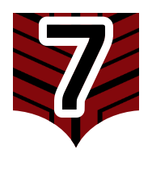

Ataque de Fumaça Orbital
"Uma barragem de projéteis de fumaça que criam uma densa cortina, obscurecendo a linha de visão e ocultando o movimento dos Helldivers do fogo inimigo."
— Terminal de Gerenciamento de Navios
— Terminal de Gerenciamento de Navios
O Ataque de Fumaça Orbital é uma Estratégia tática voltada para utilidade e defesa. Ao ser chamado, o Supercontratorpedeiro dispara salvas que não visam causar dano direto aos inimigos em área, mas sim levantar uma espessa nuvem de fumaça para proteger recuos, progressões ou ocultar a equipe durante a realização de objetivos.
Estatísticas Gerais
| Tempo de Chamada (Call-in Time) | 2 segundos |
| Tempo de Recarga (Cooldown) | 75 segundos |
| Usos por Missão | Ilimitado (∞) |
Estatísticas Detalhadas de Combate
ATAQUE DE FUMAÇA ORBITAL
| Esfriar (Cooldown) | 75 s |
| Usos | ∞ |
| Bombas | 1 |
| Salvas | 6 |
| Tamanho da Área de Bombardeio | 15 m |
| Ataques | |
|---|---|
| *S P [esconder] | Projétil |
| **S P IE [esconder] | Explosão |
S P
| Projétil | |
|---|---|
| Massa | 5 kg |
| Velocidade Inicial | 400 m/s |
| Fator de Arrasto | 0% |
| Fator de Gravidade | 100% |
| Desaceleração de Penetração | 25% |
| Explosão no Impacto | S_P_IE [esconder] |
| Dano | |
| Padrão |  300 Dano 300 Dano |
| vs. Durável | 300 Dano |
| Penetração | |
| Direto |  Antitanque III [7] |
| Ângulo Ligeiro | Antitanque III [7] |
| Ângulo Amplo | Antitanque II [6] |
| Ângulo Extremo | Antitanque II [6] |
| Efeitos Especiais | |
| Força de Demolição | 50 |
| Força de Escalonamento | 60 |
| Força de Empurrão | 15 |
S P IE
| Área de Efeito (AoE) | |
|---|---|
| Raio Interno | 12 m |
| Raio Externo | 12 m |
| Raio da Onda de Choque | 0 m |
| Duração AoE | 30 s |